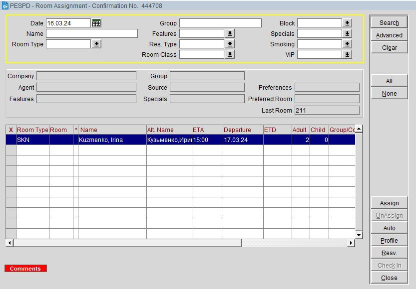
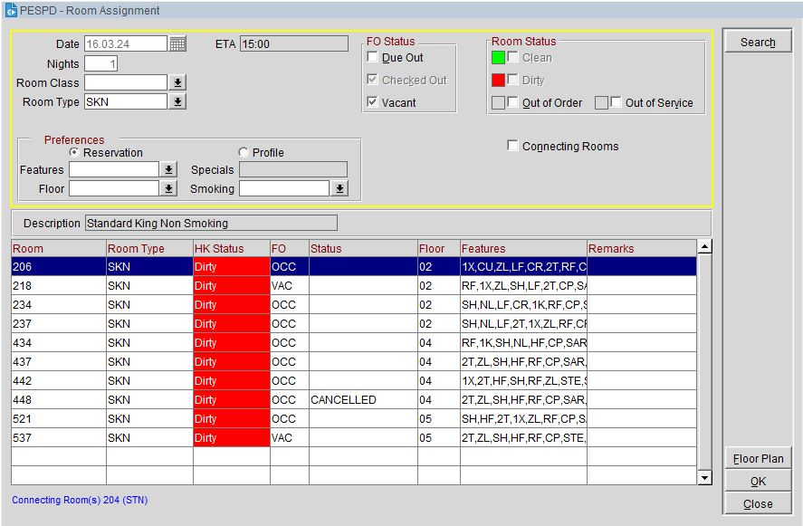

Номера приписываются за сутки до дня заезда. Приписка номеров осуществляется супервайзером утренней смены через Front Office → Room Assignment.
В поле Date ставим +1 → Search, появится список не приписанных номеров с заездом завтра.
Чтобы увидеть приписанные номера: Advanced → Assigned Rooms → Search.
Дважды кликнув по Room, откроется окно со списком номеров. Можно включить фильтр Due Out, чтобы увидеть все номера, которые в этот день на выезде в 12:00.

Также, для наглядности можно использовать Room Plan (Ctrl+F3).
Особенности приписки номеров:
- Группы: По возможности на одном этаже.
- Группы детей: Стараемся дать им 2, 3 этаж. Если дети живут коллективами, то номера каждого коллектива должны быть рядом друг с другом. В ночную смену, список номеров детских групп необходимо отправить письмом поэтажной службе. Как сформировать Groop Rooming List смотри в ночной смене.
- Сортируем по фамилиям, если есть одинаковые фамилии, приписываем номера рядом.
- Проверяем, что случайно не приписали сдвинутые кровати тем, у кого забронирован STN.
- Можно приписать сдвинутый номер тем, кто живет один. Указать это в комментах, сообщить при заселении.
- Смотрим на даты выезда. Если гость живет в гостинице долго, предпочтительно дать ему тихий номер.
- Смотрим на количество человек и доп. места. Если в номере будут проживать больше двух гостей и/или в номер необходимо установить доп. место, приписать номер больше по площади.
- Проверяем Comments и Traces. Приписываем номера с учетом пожеланий гостей. Если номер с ранним заездом - сообщаем супервайзеру поэтажной службы, он должен закрыть номер на OO (Out of Order). Если номер с поздним выездом, проверяем выставлено ли C/O Time и закрыт ли номер на Travelline.
Также, Room Assignment используется для заселения групп, об этом позже.